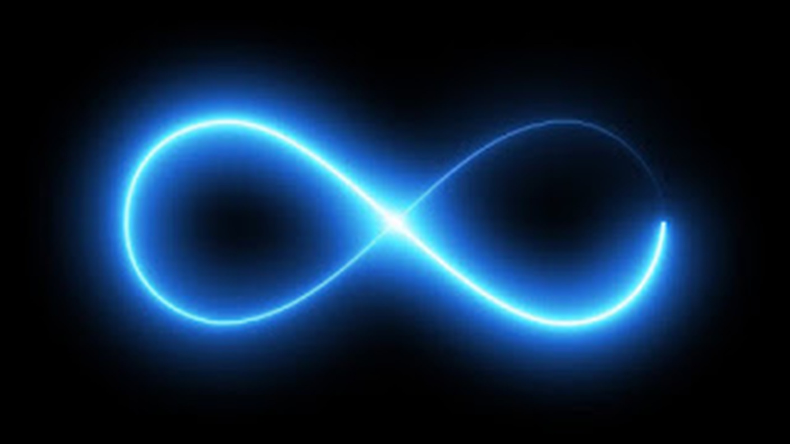

La hoja infinita
Publicado en agosto de 2026Te sientas y escribes. Porque la hoja está ahí. Porque todo está tranquilo. Porque, ahora tienes el tiempo que siempre te falta. Porque hay algo en tu cabeza que tienes que dejar salir de alguna forma. Porque no puedes dejar de hacerlo…
Te sientas y escribes y no importa por qué. Ni tan siquiera llegas a planteártelo; simplemente sale. De alguna manera, muy dentro de ti, sabes que lo necesitas. Necesitas sentarte frente a esa hoja que está ahí, que siempre está ahí, esperando, ¡esperándote!
Y cuando por fin, no importa por qué, te sientas y la ves, blanca, esperándote, sabes que ella también te ve. Comprendes que esa hoja blanca de papel también sabe que tú estabas esperando. Es un reencuentro ansiado por ambas partes. Es un momento que nunca te cansarías de repetir. Es tu momento. Es su momento. Es vuestro momento.
Sabes que no importa cuántas veces se repita porque sabes que siempre es distinto. Te sientas y escribes en esa hoja de papel con la que te reencuentras una y otra vez; pero nunca es igual. Ayer quizás escribiste con rabia, hoy quizás te impulse un rayo de luz filtrándose por tu ventana. Quizás lo hagas mañana con los ojos llenos de lágrimas.
Y la hoja siempre está allí, esperándote, esperando hoy quizás tu rabia, la luz de tu ventana, quizás tus lágrimas… Siempre allí, siempre esperando sin importar qué vayas a verter en ella porque, esa hoja, es infinita. Es una hoja en la que todo cabe. Es una hoja que nunca llegarás a terminar
Y lo sabes. Y no te importa. Porque, después de todo, te gusta que sea así.
Necesitas que sea así.